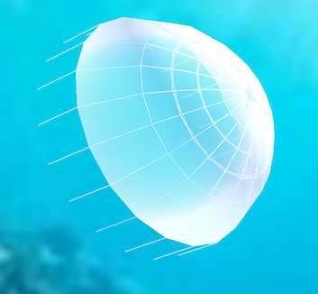

Jellyfish Simulation
|  |
I worked in a group to create a simulation of jellyfish movement underwater as part of a final project for CS184: Foundation of Computer Graphics. Our project was to render an animated simulation of jellyfish movement in water based on a cloth simulation approximation. For our jellyfish cloth, we wrote a translucency shader featuring silhouette enhancement. Through triangle sorting and interpolated alpha blending, we achieved a semi-transparent jellyfish through which the ocean background is visible. For the jellyfish model, we created a spring-mass frame consisting of point masses and structural, shearing, and bending springs. Force vectors on the spring-mass model simulate jellyfish muscle contraction and modified gravitational forces simulate water buoyancy.